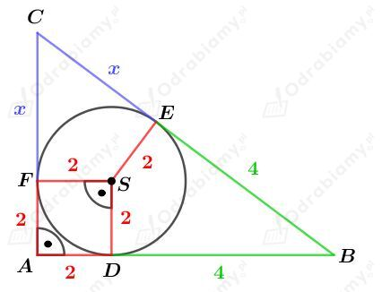
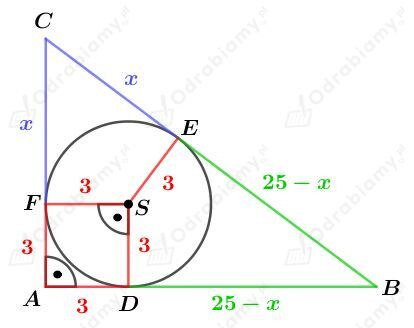
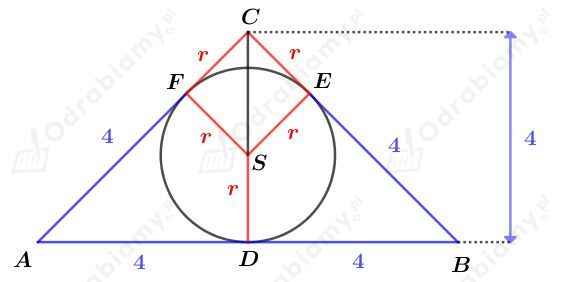
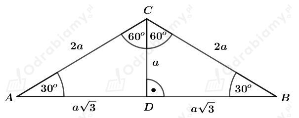
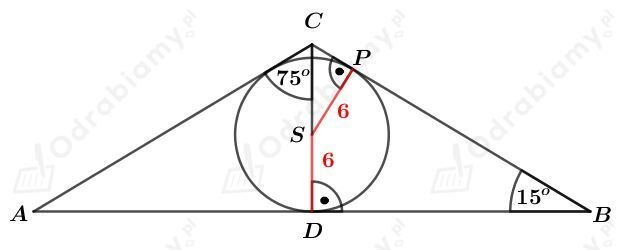

a)
Dany jest trójkąt prostokątny o jednej z przyprostokątnych długości 6 cm.
W podany trójkąt wpisano okrąg, którego promień ma długość 2 cm.
Rysunek:

Wyjaśnienie:
Korzystając z twierdzenia o odcinkach stycznych mamy:
Korzystając z twierdzenia Pitagorasa otrzymujemy:
więc
Wyznaczmy pole tego trójkąta. Mamy:
b)
Dany jest trójkąt prostokątny o jednej z przyprostokątnych długości 6 cm.
Na podanym trójkącie opisano okrąg, którego promień ma długość 4 cm.
Niech c będzie długością przeciwprostokątnej tego trójkąta. Środek okręgu opisanego na trójkącie prostokątnym dzieli przeciwprostokątną na dwie równe części, więc
Niech b będzie długością drugiej przyprostokątnej tego trójkąta. Korzystając z twierdzenia Pitagorasa otrzymujemy:
Wyznaczmy pole tego trójkąta. Mamy:
Dany jest trójkąt prostokątny.
Promień okręgu opisanego na tym trójkącie ma długość 12,5, czyli przeciwprostokątna tego trójkąta ma długość 25.
Rysunek:

Korzystając z twierdzenia Pitagorasa dla trójkąta ABC mamy:
Dla x=4 mamy:
Dla x=21 mamy:
Wyznaczmy pole tego trójkąta. Mamy:
Dany jest trójkąt prostokątny ABC (rysunek w podręczniku).
Wiemy, że |AB|=10, |BC|=8 oraz |AC|=6.
Punkt D jest punktem styczności okręgu o promieniu długości r=|CD| wpisanego w ten trójkąt z bokiem BC tego trójkąta.
Wyznaczmy pole tego trójkąta. Mamy:
Z drugiej strony, możemy zapisać, że:
Porównując otrzymane pola mamy:
Korzystając z twierdzenia Pitagorasa dla trójkąta ACD otrzymujemy:
Rysunek:

Objaśnienia:
Podany trójkąt jest trójkątem prostokątnym, ponieważ |AD|=|DB|=4 oraz |CD|=4.
Korzystając z twierdzenia o odcinkach stycznych mamy:
Trójkąt ADC jest trójkątem prostokątnym równoramiennym, czyli
czyli również
Mamy więc:
Odp. Punkt styczności z okręgiem dzieli ramię tego trójkąta na odcinki o długościach 4 cm oraz 4(√2-1) cm.
W okrąg o promieniu długości R=5 cm wpisano trójkąt równoramienny.
Rysunek:

Objaśnienia:
Korzystając ze związku między długościami boków w trójkącie o kątach 30o, 60o, 90o mamy:
Wyznaczmy pole tego trójkąta. Mamy:
Z drugiej strony, pole tego trójkąta możemy zapisać jako:
Porównując otrzymane pola otrzymujemy:
Zapiszmy długości boków tego trójkąta. Mamy:
Rysunek:

Rozważmy trójkąt prostokątny SPC. Korzystając z definicji funkcji sinus dla kąta SCP mamy:
Korzystając ze wzoru na sinus sumy kątów mamy:
Rozważmy trójkąt prostokątny DBC. Korzystając z definicji funkcji tangens dla kąta DBC mamy:
Korzystając ze wzoru na tangens różnicy kątów mamy:
Wyznaczmy długość podstawy AB tego trójkąta. Mamy: